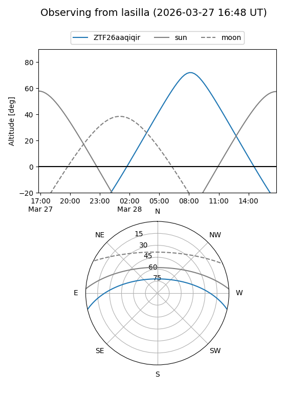
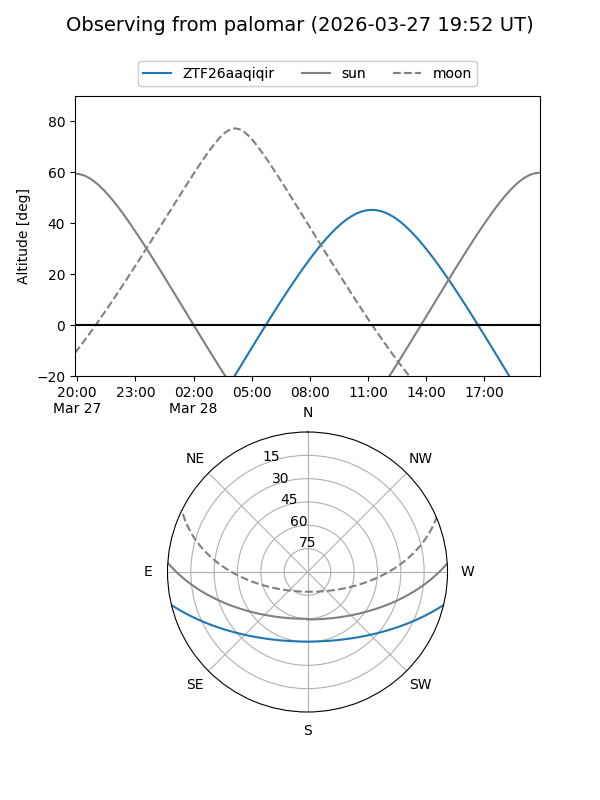

ZTF26aaqiqir
Target ZTF26aaqiqir at 2026-03-27 13:25
Aliases and brokers:
FINK: link
Lasair: link
ALeRCE: link
alt names
ZTF26aaqiqir (ztf,fink_ztf)
Coordinates:
equatorial (ra, dec) = 236.7557,-11.29305
equatorial (HMS+DMS) = 15:47:01.36,-11:17:34.97
galactic (l, b) = (356.7940,+32.65721)
Flags:
Photometry:
last ztfg=17.01
1 ztfg detections
Lightcurve
Visibility


Additional plots